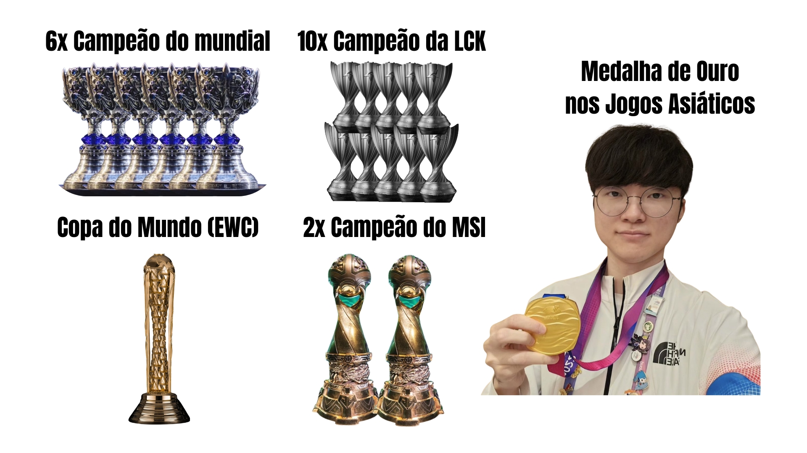

_1759714008126.png)
O Olimpo dos E-Sports: A Busca pela Excelência
Bem-vindo a uma jornada pelos nomes que redefiniram o que significa ser um atleta de elite no mundo digital. O cenário competitivo dos e-sports não é apenas sobre reflexos rápidos ou horas de prática; é sobre consistência, mentalidade inabalável e a capacidade de elevar o nível do jogo a patamares nunca antes vistos.
Neste espaço, exploramos as trajetórias de figuras lendárias que transcenderam suas respectivas modalidades. Analisamos não apenas os títulos conquistados e os troféus levantados, mas o impacto cultural e a herança técnica que cada um deixou para as próximas gerações.
Domínio Técnico: A habilidade mecânica que beira a perfeição.
Longevidade: A capacidade de se manter no topo em um cenário que evolui diariamente.
Impacto: A influência direta na forma como o jogo é jogado e compreendido por profissionais e fãs.
Prepare-se para conhecer as histórias de Faker e Aspas — dois nomes que, em seus universos distintos, personificam o significado da palavra "GOAT" e continuam a escrever a história do esporte eletrônico global.


LEE "FAKER" SANG-HYEOK
O Rei Demônio Imortal
Lee Sang-hyeok (이상혁), mundialmente conhecido como Faker, é um jogador profissional sul-coreano de League of Legends (LoL). Nascido em 7 de maio de 1996, em Seul, ele é unânime e amplamente considerado o maior jogador da história dos esportes eletrônicos (o "GOAT" do LoL). Ao longo de sua vasta e vitoriosa carreira, Faker defendeu apenas uma única organização: a T1 (anteriormente conhecida como SK Telecom T1)
Antes de se tornar um profissional, Faker jogava casualmente sob o pseudônimo "GoJeonPa", alcançando rapidamente o topo das filas ranqueadas sul-coreanas. Em 2013, foi recrutado pela organização SK Telecom T1 para atuar como Mid Laner.
Logo em seu ano de estreia, Faker chocou o mundo. Foi no verão de 2013 que ele protagonizou uma das jogadas mais famosas da história dos games: um duelo de um contra um utilizando o campeão Zed contra Ryu (da equipe KT Rolster Bullets), no qual Faker venceu com uma desvantagem mecânica e de vida absurda. Naquele mesmo ano, aos 17 anos, ele liderou a SKT rumo ao seu primeiro título do Campeonato Mundial de League of Legends (Worlds).




ERICK "ASPAS" SANTOS
Final Boss
Erick "aspas" Santos é amplamente consagrado como um dos maiores jogadores da história global de VALORANT. Conhecido por sua consistência absurda, precisão milimétrica e frieza em momentos decisivos, o duelista brasileiro transformou-se no "chefe final" do cenário competitivo mundial
Com o lançamento global de VALORANT, Erick adotou o apelido de "aspas" e passou a dominar as filas ranqueadas brasileiras com um desempenho avassalador. Por surgir de forma anônima e demonstrar uma precisão considerada "inumana", ele rapidamente virou alvo de desconfiança.
Durante meses em 2021, influenciadores, streamers e jogadores profissionais debatiam publicamente e analisavam suas jogadas sob acusações de uso de trapaças (cheats). A desconfiança só foi totalmente dissipada quando aspas passou a jogar presencialmente em ambientes controlados por organizações profissionais, provando que sua habilidade era inteiramente legítima. No fim daquele ano, jogando pela equipe Slick, já figurava entre os melhores do país.